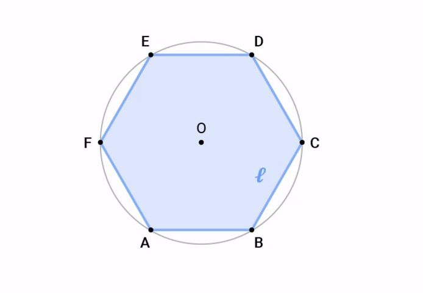
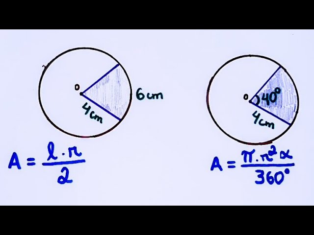

Áreas de superfícies planas são uma parte importante da geometria e da matemática em geral.
Elas envolvem o cálculo da medida de superfícies bidimensionais.
- Se a área de duas formas são iguais elas são equivalentes;
- A soma de duas superfícies é associada a uma área;
- Se há uma superfície contida dentro de outra a sua área é menor ou igual que a outra.
Coloquei um resumo com todas as Fórmulas para não ser necessário fazer várias subclasses para cada forma geométrica, a imagem abaixo representa bem os calculos para calcular cada área das superfícies.
Área de um Polígono Regular: A área de um polígono regular (aquele com todos os lados e ângulos iguais) pode ser calculada usando fórmulas específicas para diferentes formas, como pentágonos, hexágonos, etc.
Área de um Setor Circular: A área de um setor circular é uma fração da área total de um círculo e é calculada usando a fórmula Área = (Ângulo/360) x πr², onde o ângulo é medido em graus.
Bom, sei que este conteúdo não ficou muito completo, mas deixei oque achei mais facil de fazer e calcular, é um conteúdo extremamente fácil, e abaixo um video explicativo, e no canto inferior direito o próximo e penúltimo conteúdo.